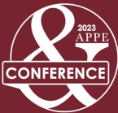

I've served as TA for Mass Communication Ethics at University of South Florida, a required ethics course for students at the St. Petersburg Campus journalism department, and taught two semesters of J202: Mass Media Practices at UW-Madison's School of Journalism & Mass Communication, a six credit course focusing on journalistic writing, editing and multimedia development.
From 2020 to 2023, I served as the Media Interest Chair for the Association of Practical and Professional Ethics, representing media and journalism ethics for the conference. During this time, I led and organized panels on journalistic rights and duties, media accessibility and digital communication ethics in addition to presenting original papers and my work with the National Ethics Project.